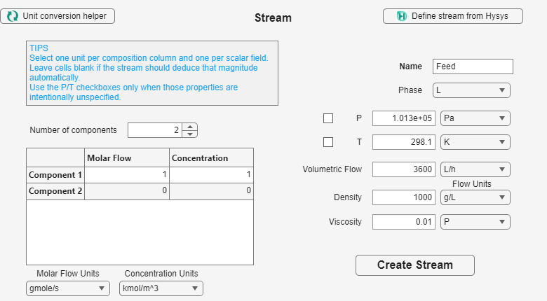
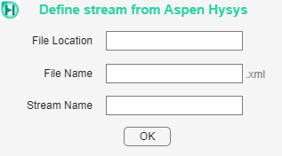

Enter component amounts and enough operating conditions to define the feed, using the unit selector beside each quantity.
Use the same component count and order as the Reactive System. Decide whether component data will be entered as molar flow or concentration and note all source units.
Set the component count and fill molar flow or concentration in the table. Then enter the available volumetric flow, pressure, temperature, density, viscosity, and phase. Every column and scalar field has its own unit selector. Leave a field blank when the application should derive it from the other stream data, and press Create Stream.

| Area | What to enter |
|---|---|
| Name and component count | A unique name and the count used by the Reactive System. |
| Component table | Molar flow or concentration, with the matching unit selector. |
| Stream state | Volumetric flow, pressure, temperature, density, viscosity, and phase when available. |
Define stream from Hysys opens a short import window. Supply the file location, file name, and stream name, then press OK. This route is optional; the main Stream window also accepts all data directly.

Define a PFR, CSTR, or Batch reactor for the feed.